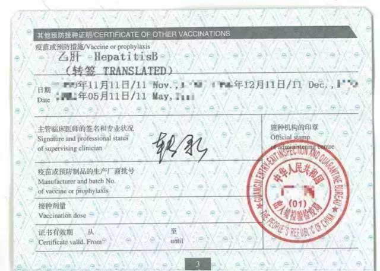

Immunization Record（疫苗记录）


每一位新生来美国之前需要完成相关体检和疫苗注射，一般是到所在地的出入境检验检疫中心/体检中心完成。由于美国每个州以及每个学校对入境人员的体检要求都不尽相同，所以请每位新生根据本校的规定来完成体检及疫苗注射的项目。
【我校要求新生入学前须完成的体检和疫苗目】
- 常规体检：血常规、静脉抽血心电图、全身检查、X光透视
- 四项疫苗：MMR麻风腮、MENINGITIS流脑、HEPATITIS B乙肝、VARICELLA水痘
- MMR：共有两针，建议在国内至少完成第一针
- 流脑：选择住学校宿舍的同学需要注射流脑疫苗，自己租房子也建议打
- 乙肝：若新生能在到达美国前注射完三针乙肝疫苗则只需在体检表上填完三次注射日期即可。若是新生注射的只有一针加强针的情况下，请务必注意：请出入境体检中心给你出示一份你过去注射过三针乙肝疫苗的记录证明（含英文）；若体检中心没有你之前的乙肝注射记录，可以找出你过去（从出生到现在）曾经注射过三次乙肝的记录（比如每个人刚出生后都肯定会有的三次记录）到体检中心请求医生将该记录转签(translate)到你的疫苗本。
- 水痘：得过水痘的跟体检中心要求验血查抗体就好了，没有的就打疫苗
- PPD测试：注意，PPD要求在入学6个月的检查结果。结合皮试需要在48小时进行复查，体检中心可能会限制在周一至周三检查。若皮试后反映的结块较大，则需要附加一个胸透的证明并盖章则需要附加一个胸透的证明并盖章
体检及疫苗表格（STUDENT HEALTH & IMMUNIZATION RECORD）PDF下载
这张表是需要体检中心在你体检后以及接种全部疫苗后填写的，其中有详细的接种疫苗说明，建议大家仔细阅读再去打疫苗，清楚自己需要打的疫苗的中英文名称，体检医生不一定会帮你仔细阅读。
清楚自己要去的体检中心地点，有些城市需要提前网上预约体检时间建议去之前打电话询问
你需要带的资料有：体检表格，护照原件以及复印件，本人两寸证件照，过往疫苗记录（出生时的健康手册及其他），支付疫苗费用的现金多带点。
*优惠提示*：如果时间允许建议同学们拿到美国签证后带着i20以及护照去出入境体检中心，可以免掉大概200RMB的体检费用
特别提醒
- 疫苗注射应尽早开始
完成体检及疫苗接种大概需要一个多月的时间，若在国内不能完成接种，也可以到美国完成，如果购买了学校保险或者包含疫苗的校外保险还可以省下国内注册疫苗的费用，建议在国内打一部分疫苗美国打一部分，比较经济，需要注意所有疫苗需尽快完成，第一学期期末的时间学校会开放选课系统，在那之前如果没有按时打完疫苗就只能延后选课时间，有些热门的课可能就选不到了。美国注射疫苗相关事项以及女同学关心的宫颈癌疫苗（HPV）请参看本篇第二点“美国疫苗注射”。 - 关于STUDENT HEALTH& IMMUNIZATION RECORD
这张表是需要体检中心在你体检后以及接种全部疫苗后填写的，其中有详细的接种疫苗说明，建议大家仔细阅读再去打疫苗，务必带上已由医生填好的完整表格来开学报道。
小部分新生提到有体检中心不懂英文，建议打印中文翻译带去，但这是极少情况。 - 健康证和疫苗本（即小红本和小黄本）
在体检和疫苗注射后，体检中心会给你健康证和疫苗本，要确保上面有签字和盖章，这两个本也是开学后要交到学校health center的重要文件。 - 关于乙肝疫苗记录的tips
根据本校的要求，health record上的乙肝疫苗需要有三针的注射记录。若新生能在到达美国前注射完三针乙肝疫苗则只需在体检表上填完三次注射日期即可。若是新生注射的只有一针加强针的情况下，务必注意请出入境体检中心给你出示一份你过去注射过三针乙肝疫苗的记录证明（含英文）；若体检中心没有你之前的乙肝注射记录，可以找出你过去（从出生到现在）曾经注射过三次乙肝的记录（比如每个人刚出生后都肯定会有的三次记录）到体检中心请求医生将该记录转签(translate)到你的疫苗本。（小黄本）上，如下图示：
 - 请规划好疫苗注射时间国内要求每人每月只能打一针疫苗，所以请安排好时间。不然你可能需要在美国一次注射很多针疫苗。水痘抗体检测和ppd测试后会拿到一张有医生签字的报告是需要拿给学校的
开学报到时，需要反馈给学校health center的文件有：
*必须项*：Student Health and Immunization Record（体检表）、健康证、疫苗本；
可选项：胸透证明、乙肝疫苗注射证明
在国内没有完成体检或疫苗注射的同学，到达学校后可以按照以下步骤进行：
第一步：同学们先拿着自己的免疫表去学校的health center，让医生把要打的疫苗勾上。
第二步：带上免疫表、学生卡和保险卡去学校指定地点（工作人员会提供地址）接种疫苗，打完后需要缴费。同时记得向医生要需要交给学校的表和收据。如果指定接种点没有疫苗，大家可以去Riverside Medical Center(609 Washington St, Hoboken, NJ 07030)；也可以跑远一点，去纽约的布鲁克林（地址295 Flatbush Ave，Brooklyn，NY，11201），这里可以免费打疫苗。
如果购买学校保险，可去CVS(59 Washington St, Hoboken, NJ 07030)、Walgreens(101-105 Washington St, Hoboken, NJ 07030)打针，学校保险报销。
第三步：回到学校的health center，向医生出示免疫表。如果已经办了保险，可询问工作人员再领一份表和一份指导填写样表，填好后和打针的收据一起寄到保险公司，可以收到支票，报销费用。
*建议---如果你需要注射疫苗的数量很多建议第一个学期上学校保险，学校要求的所有疫苗都是免费的，学校保险价格大约1800 刀，如果不需要可以在交学费前 waive（必须有自己的保险）。
由于保险卡需要在开学后数周才可拿到，在此之前打疫苗应该需要收费（现金、刷卡），请务必保留收据， 并在保险办理后参考第二步报销。也可等到保险卡寄到之后直接带保险卡去打针，免去先支付再报销的麻烦。
超级省钱攻略：
在国内只做体检以及ppd检查，转录已注射疫苗信息拿到两个本子，其余一切疫苗都到美国用保险免费注射，美国没有每个月只能注射一针的规矩，请务必结合自身身体状况进行安排，少部分同学一次性注射过多疫苗会出现短时间的身体不适的状况。
关于HPV(宫颈癌疫苗)：购买学校保险可以免费打HPV，共三针， 第一针与第二针需间隔一个月，第二针与第三针需间隔，请大家算好时间，带好保险卡去指定地点打疫苗。购买非学校保险的请自行询问保险是否可以报销HPV疫苗。自费价格大概每针200刀，三针大概共600刀。
签证申请
第一步：拿到电子档或者纸质的I-20后，先去照签证照片，一般的照相馆直接跟他说签证照片，他就会明白。填写DS-160表格，获得Application No. ，这个No.是注册后就自动生成的，务必保存下来。>以上信息务必准确，生成No.后不可更改，DS160确认页打印出来
第二步：有了I-20和Application No，下一步，注册 CGI，按照要求一步一步，填写个人信息，获得CGI号码(注册的时候需要DS-160确认编号，SEVIS 号)
第三步：签证费缴纳，在最后一步缴费时，缴费可以选择继续在线借记卡支付，柜台支付，中信银行ATM支付，后两种方式交费时需要提供CGI号码，然后拿到收据号码后，重新进去ustravel的网站，输入签证费收据单号，就可以网上预约签证。
借记卡160美金
第四步：Sevis费缴纳
借记卡200美金
签证，护照状态查询概况
护照也可发邮件：passportstatus@ustraveldocs.com
签证申请事宜联系：support-china@ustraveldocs.com
中国用户拨打电话400-616-1121
以上费用情况可能因会不同年费进行更改请按官网为准
必备材料
- 非移民签证电子申请表(DS-160)
- 前往美国旅行的有效护照，有效期需超出在美预定停留期至少六个月（有旧护照的也带上）
- 一张在最近六个月内拍摄的2英寸x2英寸（5厘米x5厘米）照片（这个不一定会用到）
- 美国学校提供的I-20表
- SEVIS(I-901)缴费收据（SEVIS 费是学生和交流学者信息系统维护费用,由美国国土安全局收取。申请签证的同时需在网上支付,支付完成后需打印收据,面签时必须带上。
- 面谈预约单（写了面签时间，地点，取护照地点的那份，预约成功后也会收到邮件，记得打印。在大使馆门口处需要出示预约确认单）
- 录取通知书，打印出来即可
- 存款证明
- Study Plan
- 在读证明，成绩单/ 毕业证，学位证
辅助材料之财力证明
- 父母收入证明
- 房产证、汽车行驶证等(必须原件)
- 其他财力证明，如股票基金等理财产品凭据（如资金担保人是开公司的，还需提供公司的营业执照，验资报告，税单等）
辅助材料之学校材料
- 奖状，去读研究生的请提供学习计划,个人简历，导师信息（敏感专业的同意一定要准备好个人简历、学习计划和导师信息，非常有可能会问到相关的问题）
- 境外旅游照片
辅助材料之家庭方面材料
- 户口本(证明亲子关系，不在同一户口本上需带出生证明)，父母结婚证
- 家庭合照2，3张
面签的过程其实很简单，去大使馆排队按照流程来就好了。一般签证官会要你的护照和I20，之后问你专业, 学校之类的问题，如果是敏感专业可能还会问导师信息，个人简历之类的问题，建议在签证前预先了解一下国外导师的研究经历和目前的研究方向,结合导师的研究情况说说自己的学习计划。
中心思想：向签证官证明签证申请者有能力财力完成其在美国的学业,并且学成后一定会回国。
如果当场就过了，签证官会把护照收下并把资料还给你，回家等护照寄给你就好了。
如果被check了，签证官可能会把护照留下也有可能会退给你（不像网上说的退给你就是被拒了）。如果护照被退回来签证官会给你一个单子让你把相应的资料通过中信银行寄过去。
最后祝大家顺利通过!^_^因不同专业签证时会遇到不同的问题,希望大家在新生群里多多交流签证经验。